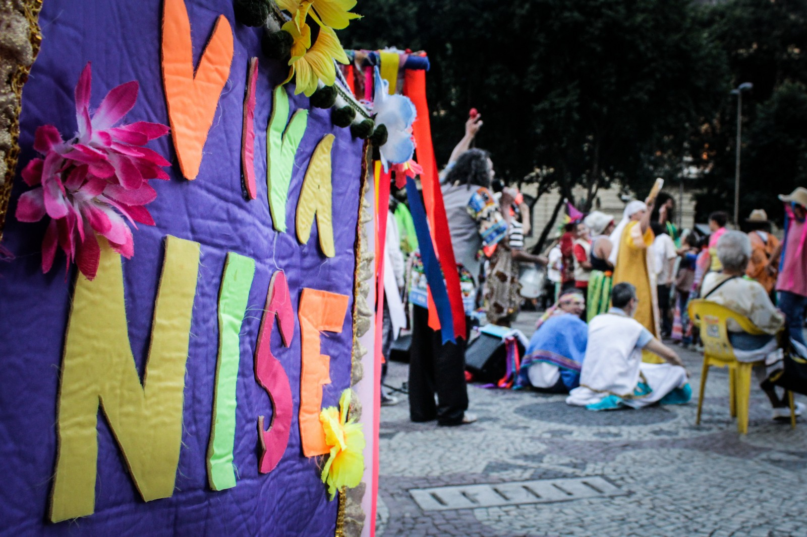
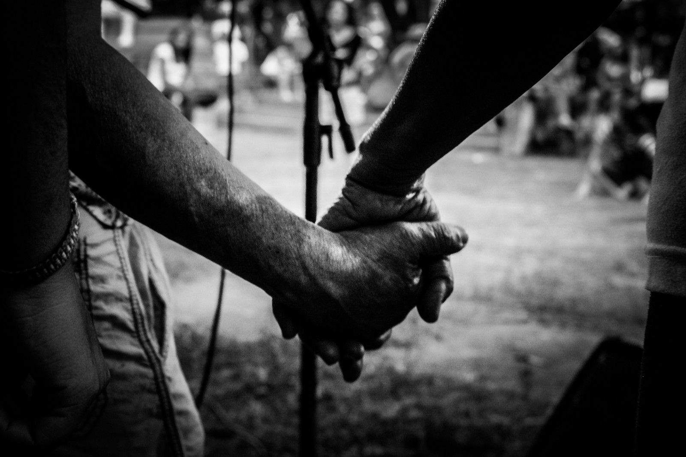

<!DOCTYPE html>
<html lang="en">
<head>

  <meta charset="utf-8" />

  <meta name="description" content="" />
  <meta name="author" content="" />

  <title>UPAC</title>

  <link href='http://fonts.googleapis.com/css?family=Roboto:400,700,400italic,700italic,900,900italic' rel='stylesheet' type='text/css'>
  <link href="bootstrap/css/bootstrap.min.css" rel="stylesheet" />
  <link href="css/app.css" rel="stylesheet" />
  <script type="text/javascript" src="http://maps.googleapis.com/maps/api/js?sensor=false"></script>
  <script src="js/handlebars.js"></script>
  <script src="js/jquery.js"></script>
  <script src="js/ember.js"></script>
  <script src="js/mapstyles.js"></script>
  <script src="js/app.js"></script>
</head>
<body>
	
	<script type="text/x-handlebars" data-template-name="menu">

		<nav id="main_menu" {{bindAttr class="route_class"}}>
			<ul>
				<li class="menu_it home">{{#linkTo 'home'}}<span><span class="ico"></span>Entrada</span>{{/linkTo}}</li>
				<li class="menu_it upac">{{#linkTo 'upac'}}<span><span class="ico"></span>Sobre a UPAC</span>{{/linkTo}}</li>
				<li class="menu_it rede">{{#linkTo 'rede'}}<span><span class="ico"></span>Rede</span>{{/linkTo}}</li>
				<li class="menu_it blog">{{#linkTo 'blog'}}<span><span class="ico"></span>Blog</span>{{/linkTo}}</li>
				<li class="menu_it agenda">{{#linkTo 'agenda'}}<span><span class="ico"></span>Agenda</span>{{/linkTo}}</li>
			</ul>
		</nav>

		<div id="sec_menu">
			<li class="menu_it login">{{#linkTo 'user.entrar'}}<span><span class="ico"></span>Fazer login</span>{{/linkTo}}</li>
		</div>

	</script>

	<script type="text/x-handlebars" data-template-name="application">

		{{view App.MenuView}}

		<div id="wrapper" {{bindAttr class="route_class"}}>
			<section id="content">
				
				{{outlet}}

			</section>
		</div>

	</script>
	
	<script type="text/x-handlebars" id="home">
		<h1>
			<span>Universidade</span>
			<span>Popular</span>
			<span>de Arte</span>
			<span>e Ciência</span>
		</h1>
		
		{{view App.HomeSlidesView}}

	</script>

	<script type="text/x-handlebars" id="home_view">
		<ul class="slideshow">
			<li></li>
			<li></li>
			<li></li>
		</ul>
	</script>
	
	<script type="text/x-handlebars" id="upac">
		
		<h1 class="logo">UPAC</h1>

		<p>Nossa proposta educacional está calcada em uma visão de educação que toma  a vivência como caminho e considera o saber-de- experiência-feito como ponto de partida, base da produção do conhecimento. Aqui referenciamos um dos nossos mestres, Paulo Freire, que nos ensina que o conhecimento provém da experiência. Nos ensina ainda, dialogando com nossa mestra maior, Nise da Silveira, que não se educa só pela racionalidade. Portanto apresentamos a amorosidade como princípio fundante de nosso caminho pedagógico e que gera o afeto catalisador, grande legado de Nise que, por sua vez, gera cuidado e alegria também conceitos que nos iluminam e orientam o nosso caminhar.</p>

		<iframe width="560" height="315" src="http://www.youtube.com/embed/XCVsm-_B_pU" frameborder="0" allowfullscreen></iframe>

		<p>Aprendemos com Baruch de Spinoza que somos afetados pelas paixões e que as paixões que geram alegria  despertam nossa potência de viver. Portanto as paixões alegres constituem-se também referencias de nossa pratica pedagógica. Também dialogando com Nise e Spinoza referendamos a idéia de Deus  como algo inerente ao humano, síntese entre transcendência e imanência, sagrado e profano, corpo e espírito. Apresentamos a vida como centralidade, biocentrismo em vez de antropocentrismo. Portanto nossa universidade referencia as praticas tradicionais como o xamanismo, o candomblé e tantas outras, como caminhos de aprendizagens significativas, de fortalecimento da identidade e dos desvelamento do que Jung chamou de  inconsciente coletivo.</p>

		<p>Na UPAC propomos uma ciência intuitiva, que considera a importância do ato criador e onde criação não se separa da invenção. Onde a poesia e a cultura popular revelam a beleza do conhecer  que gera luz, faz nascer novas possibilidades de transformação do cotidiano em suas complexidades. Referenciamos ainda Paulo Freire  ao compreendermos o humano como inacabado em sua incompletude que valoriza o saber do outro e da outra respeitando as diferenças e reconhecendo as semelhanças propondo o exercício da alteridade produtor de polifonias e policromias.</p>

		<p>Parte de uma visão ética que considera a fraternidade e a solidariedade como ideias-força e compreendendo a circularidade sistêmica, propõe mandalas como sínteses reflexivas e movimentos  em teias que referendam a conjugação do verbo esperançar como estratégia de conquista da liberdade.</p>

		<h2>UPAC na rede</h2>

		<p>Este site é uma plataforma de colaboração para os integrantes da UPAC e quem mais estiver interessado em ingressar na nossa rede.</p>

		<p>Navegue pelos conteúdos através do menu à esquerda. Cada botão leva a um espaço diferente:</p>

		

		<p>E para entrar com seu perfil ou se cadastrar, clique no botão à direita:</p>

		

		<h2>Contato</h2>
		
		<p>
			<strong>Universidade Popular de Arte e Ciência</strong>
			<br/>Inst. Mun. de Assistência À Saúde Nise da Silveira
			<br/>R. Ramiro Magalhães, 521 - Engenho de Dentro
			<br/>Rio de Janeiro - RJ, 20730-460
		</p>

		<p><strong>contato@upac.br</strong></p>

	</script>
	
	<script type="text/x-handlebars" id="rede">
		{{view App.RedeView}}
	</script>

	<script type="text/x-handlebars" id="mapa">
		<div id="map_canvas"></div>
	</script>

	<script type="text/x-handlebars" id="blog">
		<h1>BLOG</h1>
	</script>

	<script type="text/x-handlebars" id="agenda">
		<h1>AGENDA</h1>
	</script>

	<script type="text/x-handlebars" id="user">
		<h1>USER</h1>
		{{outlet}}
	</script>
	
	<script type="text/x-handlebars" id="user/index">
		lorem
	</script>

	<script type="text/x-handlebars" id="user_entrar">
		<h1>ENTRAR</h1>
	</script>

	<script type="text/x-handlebars" id="user_cadastrar">
		<h1>CADASTRAR</h1>
	</script>
	
</body>
</html>